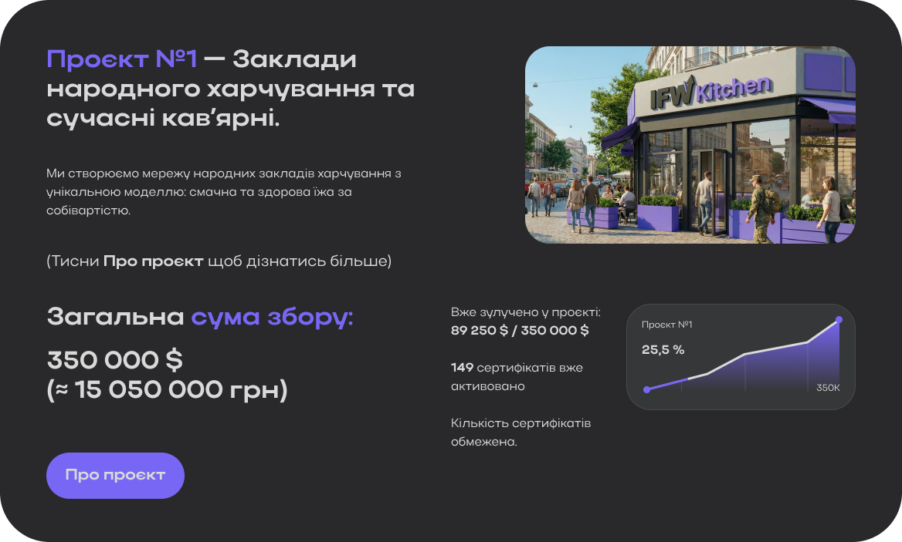
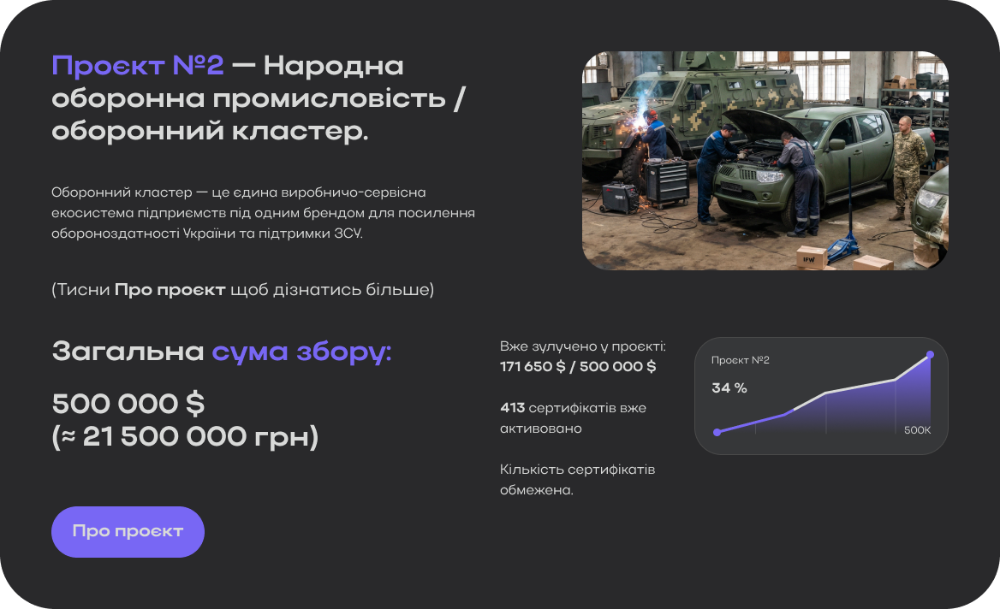
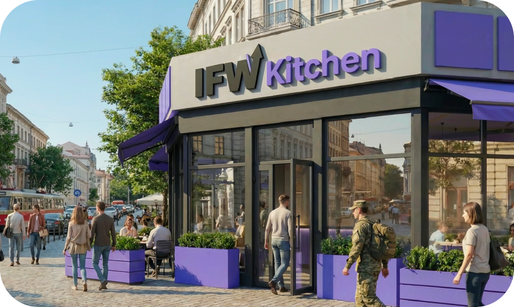
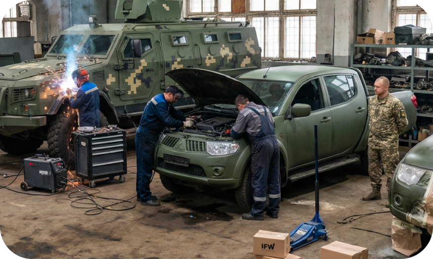
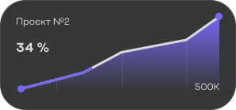

Інвестуй від 2000 грн у важливі проєкти та вже зараз отримуй пасивний дохід з їхніх прибутків.


90% доходів від чистого прибутку належать інвесторам (тобто Вам). Чим більше ви інвестуєте в проєкт, тим більший дохід отримуєте з його чистого прибутку. Усе логічно та справедливо.
10% доходів від чистого прибутку проєктів належать керуючій компанії проєкту — IFW, оскільки компанія також здійснює власні інвестиції в кожен проєкт, виступає його організатором і реалізатором, а також забезпечує управління, утримує професійну команду, здійснює контроль та розвиток кожного проєкту.
Після завершення збору інвестицій буде проведено повний перерахунок кількості інвесторів і сум їхніх інвестицій по всім проєктам для точного розрахунку часток кожного із співвласників діючого бізнесу.
Ми звʼяжемося з вами у найближчий час
Ми створюємо мережу народних закладів харчування з унікальною моделлю: смачна та здорова їжа за собівартістю.
(Тисни Про проєкт щоб дізнатись більше)

Ми створюємо мережу народних закладів харчування з унікальною моделлю: смачна та здорова їжа за собівартістю.
У закладах запроваджується система абонементів (1, 3, 6 місяців або рік), що надає доступ до їжі та напоїв за собівартістю. Військові, ветерани, пенсіонери, внутрішньо переміщені особи, люди з інвалідністю, сімʼї полеглих Героїв та інвестори можуть харчуватися за собівартістю без придбання абонементу.
Для інших відвідувачів ціни залишаються нижчими за ринкові, з помірною націнкою, яка забезпечує стабільну операційну модель і прибутковість бізнесу. Підсумковий чек у будь-якому випадку буде нижчим, ніж у конкурентів. Завдяки цій концепції харчування в закладах стає вигіднішим, ніж приготування їжі вдома. Власники абонементів отримують найкращу ціну на ринку та одночасно підтримують доступне харчування для пільгових категорій.
Окремим напрямком стане запуск мережі кав’ярень за аналогічною моделлю: пільгові категорії та власники абонементів отримують продукцію за собівартістю, інші відвідувачі — за конкурентною ринковою ціною.
Інвестори стають співвласниками закладів і отримують частку прибутку бізнесу, а також можливість завжди харчуватися за собівартістю та користуватися спеціальними цінами в кав’ярнях. Інвестиція від 2 000 грн може окупитися менш ніж за місяць лише за рахунок власного харчування.
Кожен заклад функціонуватиме як соціальний хаб: можливість зарядити пристрої, зігрітися, попрацювати або безпечно провести час. Планується підбір приміщень із підвальними просторами для облаштування укриттів.
У майбутньому передбачене масштабування мережі — декілька точок у кожному місті України. Наразі триває розробка сучасного дизайну закладів, пошук оптимальних локацій та створення меню разом із досвідченими кухарями й технологами.
(Деталі - в інформаційних зображеннях)
Вже зулучено у проєкті: 89 250 $ / 350 000 $
149 сертифікатів вже активовано
Кількість сертифікатів обмежена.
Оборонний кластер — це єдина виробничо-сервісна екосистема підприємств під одним брендом для посилення обороноздатності України та підтримки ЗСУ.
(Тисни Про проєкт щоб дізнатись більше)

Оборонний кластер — це єдина виробничо-сервісна екосистема підприємств під одним брендом для посилення обороноздатності України та підтримки ЗСУ.
Мета кластера — об’єднати критично важливі напрями для оптимізації витрат, пришвидшення виконання замовлень і забезпечення стабільного постачання продукції та послуг оборонному сектору. Проєкт поєднує комерційну ефективність зі стратегічною місією — зміцнення оборони країни.
Запуск планується поетапно з можливістю масштабування залежно від потреб. Локації обиратимуться з урахуванням логістики, безпеки та кадрового потенціалу.
У перспективі кластер має отримати статус критично важливого підприємства, що дозволить бронювати співробітників, розширювати виробництво та формувати сталу національну оборонно-промислову мережу. Також передбачено навчання та працевлаштування ветеранів, ВПО, жінок і студентів до роботи на підприємствах.
Основні напрями діяльності та технологічні можливості:
• ремонт і модернізація транспорту та спеціалізованої техніки;
• бронювання, фарбування в мілітарі-кольори та доопрацювання транспорту для роботи в складних
умовах;
• переобладнання техніки для підвищення безпеки й комфорту екіпажів;
• виробництво біонічних протезів;
• пошиття спеціалізованого екіпірування;
• розробка та виробництво дронів та літальних апаратів;
• роботизовані рішення для оборонної сфери;
• власний дата-центр і розвиток ШІ для обробки даних та аналітики.
(Тисни Про проєкт щоб дізнатись більше)

Вже зулучено у проєкті: 89 250 $ / 350 000 $
149 сертифікатів вже активовано
Кількість сертифікатів обмежена.